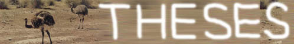

MY LIFE VS MY DREAM ****LEPTOSOME*
|
《他们的世界和我们的世界——对于二维，三维，多维以及分数维宇宙空间的探索》(2001年冬)，我不认为这是一篇很好的论文，但是我的确在上面花了很多时间，多得前无仅有。这篇文章存在这很多问题，比如说最后未能得到一个“简单的一句话能够说清楚的”结论。但是我一直认为，它的结论是一个成网状的模糊的整体。这是我交给语文老师的高二学生小论文作业，最后并没有得以参加学校的小论文答辩得机会，理由是说由于太难了太深了太长了所以不能够去答辩。我觉得我应该承认，决定把它交给语文老师是因为无法把它投到一个其他的地方，所以我竭力想给它找一个归宿。但是我必须要说的一件事情是，如果说它写的不好所以不能够参加答辩，这件事本无可厚非，但是因为上面所提到的这样的理由就未免太牵强了。我只想说的一句话是，我对于这件事情持极度的保留态度。如果大家认为希望看一看它，确定一下它到底怎么样，那么就请打开吧！
然后就到了5月11日，上午我聆听了学校的小论文答辩会。大约是在这一天的晚些时候，我决定重写我参加高二学生小论文活动的论文，也就是《浅谈北大附中的高二小论文活动》(200/5/11)，而把原来的那篇《他们的世界和我们的世界》作为附录。大概是在夜里，四个小时写了9000字。我父母说我写论文都写油了。后来又删去了一些偏激的内容，现在大概还剩8000字。我对于这篇文章还是比较满意的，因为它真的有实用价值而且比《教育》要深一些，至于一些详细原因以及一些观点和历年，在论文中有所论述。
《人类将会怎样灭绝》(200/9/10)和《资源！资源！》(200/9/13)是姊妹篇。这个学期刚开学，老师就让我们写关于“五十年后的北京”的论文(后来才知道其实是征文)。我写了第一篇，野猪大叫：“太悲观。”老师们认为这不符合题目要求。因为怕被野猪的长牙撞伤(灵感来自一位诺贝尔建桥学奖获得者给我发的E-mail)我不敢一意孤行，但是我真的非常非常想把它交上去，于是又写了第二篇文章，把第一篇文章当作附录交上去了(是不是有点像一个大疯子)。
《灯火通明——从照明范围问题到非粘性吸引球》(2000年夏)与高中同学阿格若合写，为第二作者。写的是关于几个灯照耀一块空间，超过某一个特定亮度的范围的形状。这种形状很奇怪，我们叫它非粘性吸引球。必须补充说明的一句是在改版后的这片文章中，我已经成了“特殊感谢”。
《碳盒，碳环，碳胎——寻找碳元素其它同素异形体的可能数学模型》(2000年夏)Because这是手写稿，不久前才有机会扫描。文件体积很大。所以分页打开：P1 | P2 | P3 | P4 | P5 | P6 | P7 | P8 | P9 | P10 | P11 | P12 。本文还有一个《跋》，是我2001年三月份用这篇文章参加“应用数学竞赛”前写的，分别是P1 | P2 | P3。想不想看一看这篇文章的幻灯片，它是我参加论文答辩的时候用的。
另外一篇可以看到的论文是《中国教育应置何方》(2000/6/3),这是语文老师留的该死的作文题的一种违规的写法。有些人告诉我这篇论文写的特别自私。如果阁下也感觉到，大可不必介意。大概我的思想境界也不过如此，如果强做高尚，大概应该叫虚伪。用自私换虚伪，应该说还是很值得的。
我的论文《百发百中——投篮中的数学问题》(2000年冬)适于作为茶余饭后的闲点或安眠药，这是我参加“应用数学竞赛”的论文。希望阁下喜欢(虽然我知道可能性很小，它最多可以当安眠药用，不过或许一般的论文都有这种功能)。
|